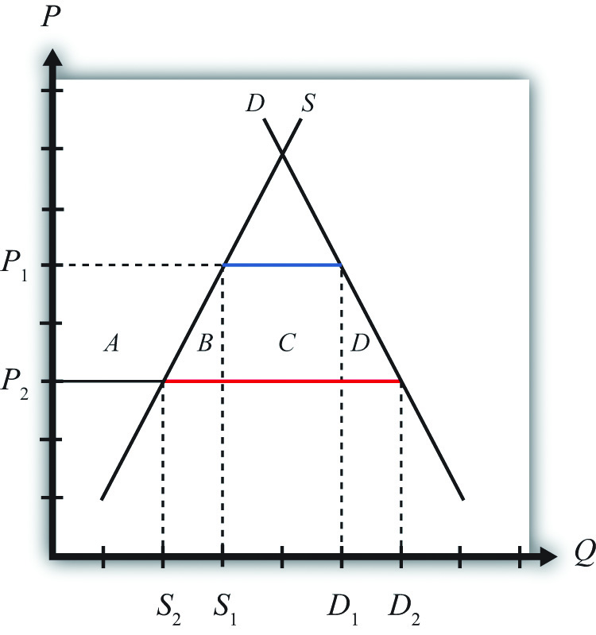

Consider a small perfectly competitive economy. Suppose this economy has a market imperfection in the form of relatively immobile factors of production across industries. We will imagine that the labor force develops sector-specific skills as the time of employment in an industry increases. Thus if a worker works in an industry—say, the textile industry—for a long period of time, her productivity in textile production rises relative to nontextile workers who might begin employment in the textile industry. Similarly, other workers become more productive in their own industries relative to a textile worker who might begin employment in another industry.
These assumptions imply that although workers might be free to move across sectors of the economy, they might not be easily or costlessly transferred. Workers in one industry, accustomed to being paid a wage proportional to their productivity, might be unwilling to accept a lower wage in another industry even though the lower wage would reflect their productivity in that industry. A worker’s reluctance to transfer could lead to a long search time between jobs as the worker continues to look for an acceptable job at an acceptable wage.
During the search period, a variety of adjustment costs would be incurred by the unemployed worker and by the government. The worker would suffer the anxiety of searching for another job. His or her family would have to adjust to a reduced income, and previous savings accounts would be depleted. At the worst, assets such as cars or homes may be lost. The government would compensate for some of the reduced income by providing unemployment compensation. This compensation would be paid out of tax revenues and thus represents a cost to others in the economy.
In some instances, the productivity of transferred workers could be raised by incurring training costs. These costs might be borne by the individual worker, as when the individual enrolls in a vocational training school. The costs might also be borne by an employer who hires initially low-productivity workers but trains them to raise their skills and productivity in the new industry.
In any case, the economy is assumed to have an unemployment imperfection that arises whenever resources must be transferred across industries. In every other respect, assume the economy is a small open economy with perfectly competitive markets and no other distortions or imperfections.
In the standard case of a small perfectly competitive economy, the optimal trade policy is free trade. Any tariff or quota on imports, although beneficial to the import-competing industry, will reduce aggregate efficiency—that is, the aggregate losses will exceed the aggregate benefits.
Imagine, however, that the economy initially has full employment of labor but that it has the unemployment imperfection described above. Suppose that initially the free trade price of textiles is given by P1 in Figure 9.1 "Unemployment in a Small Country Import Market". At that price, demand is given by D1, supply by S1, and imports by D1 − S1 (the blue line segment).
Figure 9.1 Unemployment in a Small Country Import Market
Suppose that international market conditions suddenly change such that a surge of imports begins in the textile industry.
The surge can be represented by a reduction in the world price of the imported good from P1 to P2. This would occur if there is an increase in total world supply of textiles of sufficient size to reduce the world price of the good. Since this importing country is assumed to be small, it must take the world price as given.
Domestic import-competing textile firms, to maintain profitability, would adjust to the lower free trade price by reducing output; supply would fall from S1 to S2. The lower price would stimulate demand for the product, which would rise to D2. Thus imports would rise to D2 − S2 (the red line segment). The welfare effects of the lower world price are shown in Table 9.1 "Welfare Effects of a Lower Free Trade Price".
Table 9.1 Welfare Effects of a Lower Free Trade Price
| Importing Country | |
|---|---|
| Consumer Surplus | + (A + B + C + D) |
| Producer Surplus | − A |
| Unemployment Cost | − F |
| National Welfare | (B + C + D) − F |
Consumers benefit from the lower free trade price. Producers lose in terms of a reduction in producer surplus. However, the unemployment imperfection implies that there is an additional cost that is hidden in this analysis. For domestic firms to reduce output requires them to reduce variable costs of production, which will include layoffs of workers. This means that the adjustment to the new free trade equilibrium will cause unemployment and its associated costs. We’ll represent these unemployment or adjustment costs by the variable F. Note that these costs do not appear in Figure 9.1 "Unemployment in a Small Country Import Market".
The national welfare effects of the import surge depend on how high the unemployment costs (F) are compared to the aggregate benefits (B + C + D). Thus the national welfare effect could be positive or negative.
It is possible to eliminate the costs of unemployment by applying a tariff on imports of textiles. Suppose in response to the sudden drop in the free trade price, the government responds by implementing a tariff equal to P1 − P2. In this case, the domestic price would rise by the amount of the tariff. Instead of facing the new world price P2, the domestic country will face the original price P1. The tariff would eliminate the unemployment in the industry by keeping the domestic price at the original level. Domestic supply would remain at S1 and employment would also remain at its original level.
However, implementing the tariff will also impose other costs on the economy. Table 9.2 "Welfare Effects of an Import Tariff" provides a summary of the direction and magnitude of the welfare effects to producers, consumers, and the government in the importing country. These effects are calculated relative to the economic situation after the surge of imports occurs. The aggregate national welfare effects are also shown.
Table 9.2 Welfare Effects of an Import Tariff
| Importing Country | |
|---|---|
| Consumer Surplus | − (A + B + C + D) |
| Producer Surplus | + A |
| Govt. Revenue | + C |
| Unemployment Cost | + F |
| National Welfare | F − (B + D) |
Tariff effects on the importing country’s consumers. Consumers of the product in the importing country suffer a reduction in well-being as a result of the tariff. The increase in the domestic price of both imported goods and the domestic substitutes reduces the amount of consumer surplus in the market. Refer to Table 9.2 "Welfare Effects of an Import Tariff" and Figure 9.1 "Unemployment in a Small Country Import Market" to see how the magnitude of the change in consumer surplus is represented.
Tariff effects on the importing country’s producers. Producers in the importing country experience an increase in well-being as a result of the tariff. The increase in the price of their product on the domestic market increases producer surplus in the industry. Refer to Table 9.2 "Welfare Effects of an Import Tariff" and Figure 9.1 "Unemployment in a Small Country Import Market" to see how the magnitude of the change in producer surplus is represented.
Tariff effects on the importing country’s government. The government receives tariff revenue as a result of the tariff. Who benefits from the revenue depends on how the government spends it. Typically, the revenue is simply included as part of the general funds collected by the government from various sources. In this case, it is impossible to identify precisely who benefits. However, these funds help support many government spending programs that presumably either help most people in the country, as is the case with public goods, or target certain worthy groups. Thus someone within the country is the likely recipient of these benefits. Refer to Table 9.2 "Welfare Effects of an Import Tariff" and Figure 9.1 "Unemployment in a Small Country Import Market" to see how the magnitude of the tariff revenue is represented.
The tariff eliminates the unemployment or adjustment costs that would have been incurred in the absence of protection. Hence welfare rises by the amount F.
The aggregate welfare effect for the importing country is found by summing the gains and losses to consumers, producers, the government, and the potentially unemployed workers. The net effect consists of three components: a positive effect on workers who are saved from the negative effects of unemployment (F), a negative production distortion (B), and a negative consumption distortion (D).
Whether the country benefits from protection in the presence of an unemployment imperfection depends on how the cost of unemployment compares with the standard aggregate welfare cost of protection. If the aggregate costs of unemployment (F) that would arise in the absence of a tariff exceed the deadweight costs of the tariff (i.e., B + D), then national welfare would rise when the tariff is implemented. The tariff would eliminate the adjustment costs of unemployment while imposing other lower costs on consumers who would lose the benefit of lower prices.
With a more completely specified model, one could determine the optimal level of protection in these circumstances. It is not necessarily true that the optimal tariff will be the tariff that maintains the price at the original level. Instead, the optimal tariff will be achieved when the marginal cost of raising it further is just equal to the marginal benefit of the reduction in unemployment costs. This may be lower than the level set in the example above.
Of course, it is also conceivable that the aggregate costs of the tariff (B + D) exceed the aggregate adjustment costs (F) incurred by those who would become unemployed. In this case, the optimal tariff would remain zero and it would be best for the country to allow the adjustment to proceed. Thus the mere presence of unemployment is not sufficient evidence to justify the use of protection.
Also, even if protection is beneficial in the aggregate, it is important to remember that protection generates a redistribution of income. A tariff will force consumers to pay higher prices than they would have to pay in free trade. The extra costs to consumers are essentially being transferred to the firms and workers in the import-competing industry and to the government in the form of tariff revenue.
Finally, one could object to protection by noting that the benefit of protection—that is, eliminating unemployment—represents the permanent avoidance of temporary costs. If free trade were maintained in the face of the import surge, unemployment and its associated costs would be incurred, but these costs are likely to be temporary. Eventually workers will find alternative employment opportunities in other industries and the adjustment costs will dissipate. However, the benefits of free trade in the form of lower prices for consumers would be permanent benefits. Lower prices would presumably prevail period after period into the future. This means that even if the one-period benefits of eliminating unemployment exceed the one-period costs of protection, this may not hold if evaluated over multiple periods.
Another objection to the use of a tariff to eliminate the cost of unemployment is that a tariff will be a second-best policy to correct the unemployment imperfection. The first-best policy would be a policy targeted more directly at the source of the market imperfection—in this case, the unemployment. Many such policies would be superior to a tariff. One easy-to-analyze policy is a production subsidy. A production subsidy means that the government would make payments, say, per unit of output produced by the domestic firms.
Begin with the same surge of imports described in Figure 9.1 "Unemployment in a Small Country Import Market" in the import market and with the same welfare costs and benefits. This time, however, suppose that the government offers a production subsidy sufficient to raise output in the domestic industry back to the original level. Recall that a production subsidy will raise the producer’s price by the amount of the subsidy for a small country and will maintain the consumer price at its original level. A specific production subsidy “s” set equal to the difference P1 − P2 would cause the producer price to rise to P1 while the consumer price would remain at P2. The higher producer price will induce domestic firms to raise their supply back to the original level of S1, but the constant consumer price will keep domestic demand at D2.
Table 9.3 "Welfare Effects of a Production Subsidy" provides a summary of the direction and magnitude of the welfare effects to producers, consumers, and the government in the importing country as a result of the production subsidy. These effects are calculated relative to the economic situation after the surge of imports occurs. The aggregate national welfare effects are also shown.
Table 9.3 Welfare Effects of a Production Subsidy
| Importing Country | |
|---|---|
| Consumer Surplus | 0 |
| Producer Surplus | + A |
| Govt. Revenue | − (A + B) |
| Unemployment Cost | + F |
| National Welfare | F − B |
Production subsidy effects on the importing country’s consumers. Consumers of the product in the importing country are unaffected by the subsidy since there is no change in the domestic price of the good.
Production subsidy effects on the importing country’s producers. Producers in the importing country experience an increase in well-being as a result of the tariff. Although they receive the same free trade price in the market as before, they now also receive the per-unit subsidy payment from the government. That means that their surplus is measured off of the original supply curve. Refer to Table 9.3 "Welfare Effects of a Production Subsidy" and Figure 9.1 "Unemployment in a Small Country Import Market" to see how the magnitude of the change in producer surplus is represented.
Production subsidy effects on the importing country’s government. The government must pay the per-unit production subsidy. The per-unit subsidy rate is given as the price difference (P1 − P2), while the quantity of domestic production is given by S1. The product of these two terms gives the value of the subsidy payments made by the government. Who loses from the subsidy payments depends on where the tax revenue is collected. Generally, it is impossible to identify precisely which taxpayers lose. Refer to Table 9.3 "Welfare Effects of a Production Subsidy" and Figure 9.1 "Unemployment in a Small Country Import Market" to see how the magnitude of the subsidy payments is represented.
The subsidy eliminates the unemployment or adjustment costs that would have been incurred in the absence of the subsidy. Hence welfare rises by the amount F.
The aggregate welfare effect for the importing country is found by summing the gains and losses to consumers, producers, the government, and the potentially unemployed workers. The net effect consists of two components: a positive effect on workers who are saved from the negative effects of unemployment (F) and a negative production distortion (B).
Whether the country benefits from a production subsidy in the presence of an unemployment imperfection depends on how the cost of unemployment compares with the standard aggregate welfare cost of protection. If the aggregate costs of unemployment (F) that would arise in the absence of a tariff exceed the production efficiency losses of the subsidy (i.e., B), then national welfare would rise when the production subsidy is implemented. The production subsidy would eliminate the adjustment costs of unemployment but would cost the taxpayer extra money to finance the subsidy.
However, the key difference is the comparison of the production subsidy with the import tariff. Both policy actions could generate an improvement in national welfare, but the production subsidy would raise national welfare by more than the import tariff. In Figure 9.1 "Unemployment in a Small Country Import Market", it can be seen that F − B > F − B − D. For this reason, we might refer to the production subsidy as a first-best policy, while the import tariff is second best.
The production subsidy is superior because it corrects the imperfection more directly. By targeting production, the production subsidy creates a production distortion (B) but eliminates an unemployment imperfection. The tariff, on the other hand, creates a production and consumption distortion (B + D) to eliminate the same unemployment imperfection. Generally, it is preferable to introduce as few other distortions as possible in designing a policy to correct another.
This example shows how a production subsidy is superior to a tariff. However, in the case of an unemployment imperfection, there are likely to be policies superior to the production subsidy. It would seem that some policies would target the imperfection even more directly.
For example, the government could use a labor employment subsidy if the primary problem were the potential unemployment of labor. In this case, the government would make a payment to firms for each worker hired. If set at the correct level, the subsidy could eliminate the negative effects caused by unemployment. However, since firms would remain free to substitute labor for other inputs, industry production levels might not be the same as with a production subsidy. Firms’ freedom to adjust output could further reduce the cost of the additional distortion.
A labor employment subsidy, however, would not solve the problem of long-term adjustment. As mentioned, the cost associated with unemployment is likely to be temporary, while the cost of eliminating the unemployment with a subsidy would require a permanent taxpayer cost. Thus an even more superior policy would probably be one that is targeted even more directly at the source of the problem. Recall that the problem is in the adjustment process. Superior policies might be those that facilitate the adjustment of labor resources across industries.
In a sense, this is the purpose behind policies like trade adjustment assistance (TAA). TAA was originally implemented in the 1962 U.S. Trade Act. It provides for the extension of unemployment compensation, loans, and grants for technical retraining and other types of support programs for workers who are displaced as a result of trade liberalization. If TAA is designed and implemented in a cost-efficient manner, it could be first among the contenders for a first-best policy to correct an unemployment imperfection.
Consider the following imperfect market situations in the table below. From the following list of policy options, identify all types of trade policies and all types of domestic policies that could potentially raise national welfare in the presence of each imperfection. Consider only the partial equilibrium effects of each policy.
Options: An import tariff, an import quota, a voluntary export restraint (VER), an export tax, an export subsidy, a production tax, a production subsidy, a consumption tax, and a consumption subsidy.
Table 9.4 Welfare Improving Policies
| Trade Policy | Domestic Policy | |
|---|---|---|
| 1. Unemployment in a small import-competing industry suffering from a surge of imports | ||
| 2. A small country in which an export decline causes unemployment |
Consider the policy actions listed along the top row of the table below. In the empty boxes, use the following notation to indicate the effect of each policy on the variables listed in the first column. Use a partial equilibrium model to determine the answers and assume that the shapes of the supply and demand curves are “normal.” Assume that none of the policies begin with, or result in, prohibitive policies. Use the following notation:
+ the variable increases
– the variable decreases
0 the variable does not change
A the variable change is ambiguous (i.e., it may rise, it may fall)
Table 9.5 Effects of Policies to Alleviate Unemployment
| Import Tariff by a Small Country with Unemployment | Production Subsidy by a Small Country with Unemployment | |
|---|---|---|
| Domestic Consumer Price | ||
| Domestic Producer Price | ||
| Domestic Industry Employment | ||
| Unemployment Welfare Effect | ||
| Domestic Consumer Welfare | ||
| Domestic Producer Welfare | ||
| Domestic Government Revenue | ||
| Domestic National Welfare |